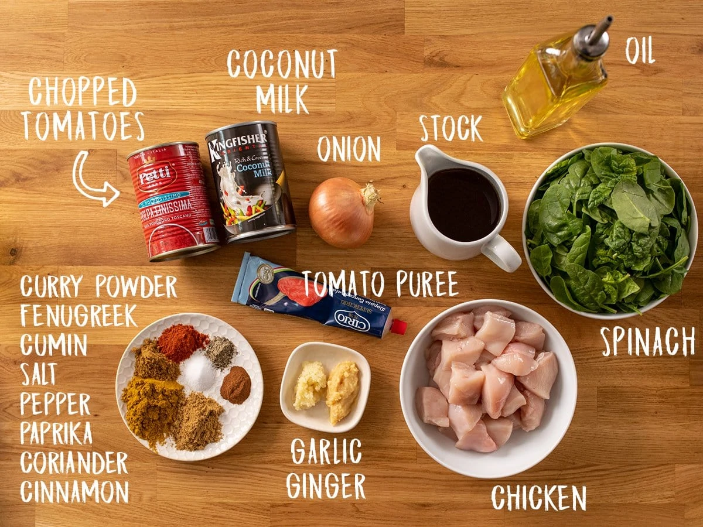
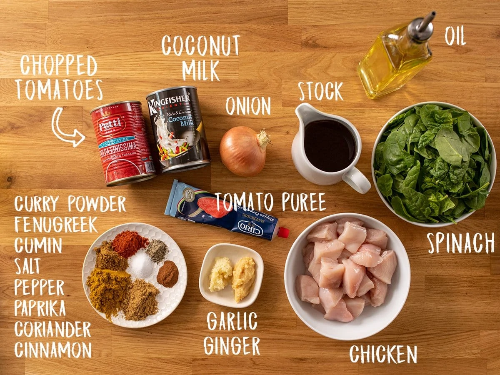
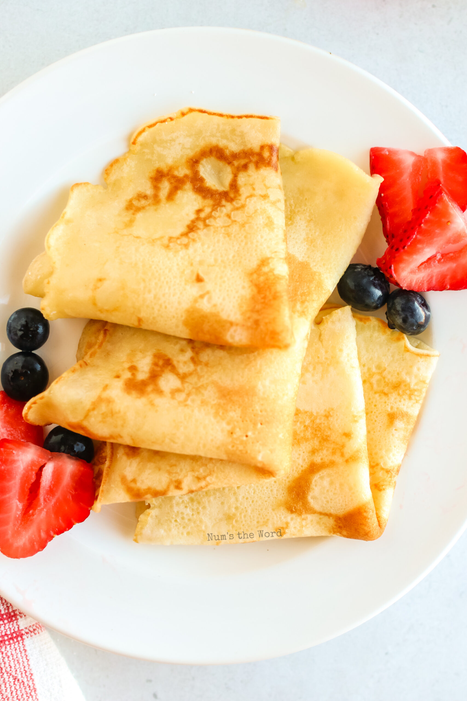
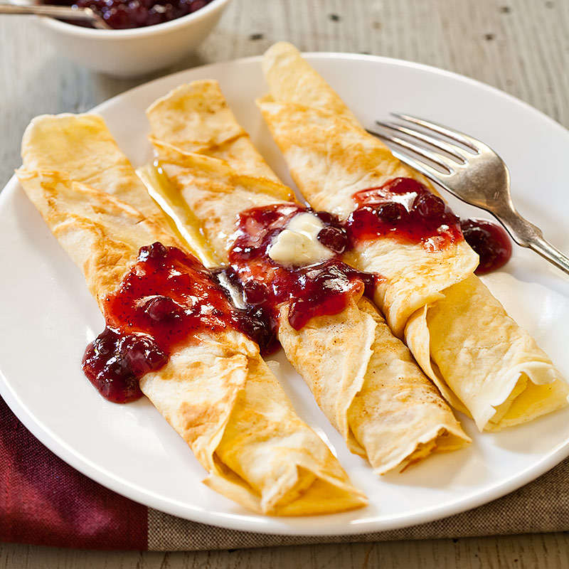
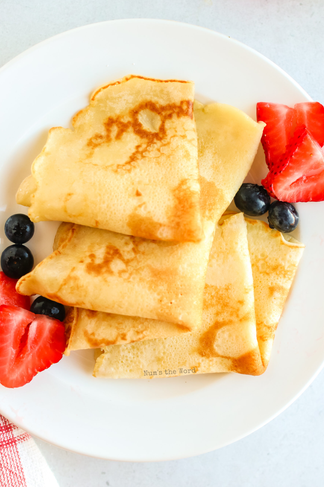
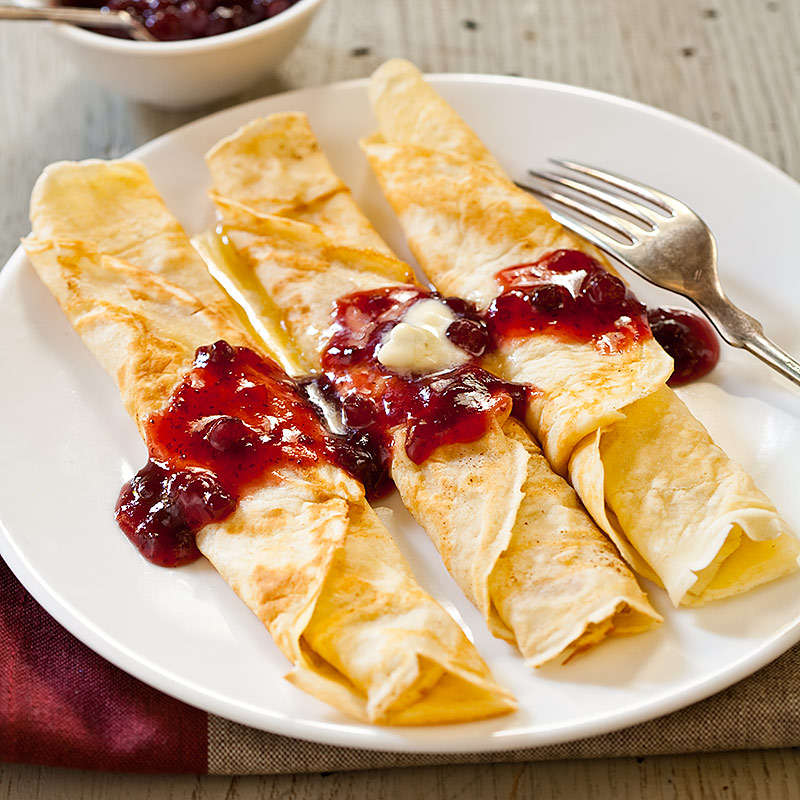

Recipes
Chocolate Chip Cookie
Origin
America
Source:link
Category
Dessert

Ingredients
- Flour
- Egg
- Water
- Chocolate Chip
- Butter
- Sugar
Recipe
- The first step in making these easy chocolate chip cookies to to combine the dry ingredients in a medium size bowl.
- Next, cream together butter and sugars, make sure to soften the butter early by taking it out of the fridge at least two hours before baking so it’s ready to go when you need it. You can also warm it in the microwave for about 7 seconds, but be very careful not to melt it.
- Add dry ingredients and stir until just combined. Then add the chocolate chips and beat until they are evenly distributed throughout the dough.
- Once the cookie dough is finished, it’s time to portion and roll the dough. I know many people eyeball it when making cookies, however I highly recommend using a cookie scoop.
- If you are baking the cookies immediately simply roll them into balls, place them evenly apart on a baking sheet (about 1.5 to 2 inches apart) and bake at 375 degrees for 8-10 minutes.
Additional image


Chicken Curry
Origin
India
Source:link
Category
Main Dish

Ingredients
- rice
- curry
- Water
- Chicken
- onion
- olive olive
- tomato paste
- cinnamon
- paprika
- coconut milk
- bayleaf
- sugar
- yogurt
- ginger
- salt
- garlic
- lemon juice
- cayenne pepper
Recipe
- Heat olive oil in a skillet over medium heat. Sauté onion until lightly browned.
- Stir in garlic, curry powder, cinnamon, paprika, bay leaf, ginger, sugar, and salt. Continue stirring for 2 minutes.
- Add chicken pieces, tomato paste, yogurt, and coconut milk. Bring to a boil, reduce heat, and simmer for 20 to 25 minutes.
- Remove bay leaf, and stir in lemon juice and cayenne pepper. Simmer 5 more minutes.
Additional image

 

Swedish Pancake
Origin
Sweden
Source:Kristi
Category
Dessert

Ingredients
- Flour
- Egg
- Water
- Vanila
- Butter
- milk
- Sugar
Recipe
- Combine all ingredients in a blender and blend until completely smooth.Transfer to the refrigerator to rest for at least 2 hours or up to 2 days.
- Preheat the oven to 200 degrees if you plan to eat the pannkakor right away. Heat a 10 inch nonstick skillet over medium heat. Stir the batter briefly to recombine. Brush skillet with melted butter. Pick the skillet up off of the burner and quickly add ¼ cup of batter. Immediately begin swirling the batter around the skillet so that it coats the bottom of the pan. Continue swirling until the batter is just set. Return skillet to the burner. Cook until the pancake is golden brown in spots on the bottom, about 30 seconds. Use a thin spatula to loosen the pancake, flip it over continue to cook on the other side for about 30 seconds. Transfer to a plate. Cover with foil and transfer to oven to keep warm and repeat with remaining batter, wiping out skillet in between pancakes with paper towel as needed.
- Serve with lingonberry jam and butter (see note below) or other desired toppings and/or fillings. See notes below for more information about making ahead of time and storing in the refrigerator or freezer.
Additional image
 


